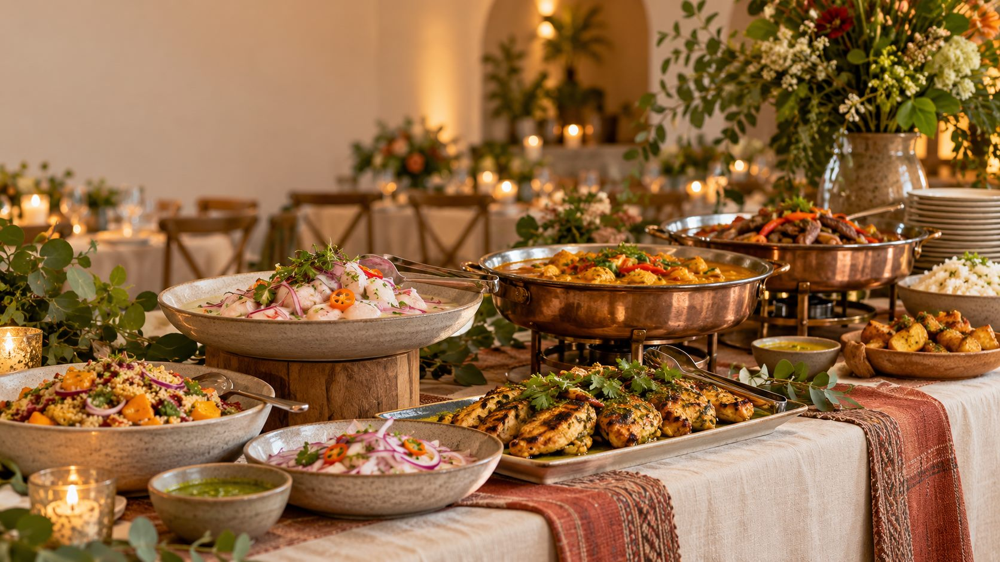

Buffet para tu celebración
Entradas, fondos y guarniciones. Coordinamos el menú y la forma de servir según tu evento.
Dirección visual para Catering Gladis: limpieza, elegancia y cercanía. La propuesta comercial se adapta al evento; el trato y el cuidado son para todos.
El blanco da espacio a la comida. El jade organiza las acciones. El amarillo aparece sólo como un detalle cálido.
Estudio de composición adaptable a móvil. Los enlaces de esta lámina explican la propuesta; no cotizan ni abren WhatsApp.
En todo Lima Metropolitana
Buffet y servicios para tu evento. Cuéntanos qué necesitas y qué presupuesto tienes en mente; conversemos sobre las opciones.

Todos los precios se consultan por WhatsApp.
Entradas, fondos y guarniciones. Coordinamos el menú y la forma de servir según tu evento.
Otra forma de compartir la mesa. Consulta los platos y las opciones disponibles para tu reunión.
Para recibir y atender a tus invitados.
Lo necesario para preparar el espacio.
Ideas para acompañar tu celebración.
Empieza por el buffet o por otro servicio que necesites.
Indica fecha, distrito y personas. El presupuesto es opcional.
Conversa con el área que atenderá tu consulta. Tú decides si envías.
Cuéntanos la tuya y conversemos sobre las opciones.
Esta composición abrevia la portada. La especificación completa añade ocasiones, cobertura, preguntas frecuentes y pie de página. No es la web implementada.
Dos familias propuestas, con funciones distintas. Sin títulos en mayúsculas ni letra diminuta para la información importante.
Carácter editorial suave para la marca y los títulos. H1 de 52–60 px en escritorio y 34–38 px en móvil.
Texto de 16–18 px, etiquetas visibles y controles de al menos 44 px de alto como objetivo de diseño.
Sustitutos en esta lámina: Georgia y Arial. Las fuentes propuestas se alojarán localmente al implementar, con sus licencias; esta muestra no solicita fuentes externas.
El cliente siempre sabe qué ha elegido y con quién va a conversar. Este es el recorrido propuesto, pendiente de implementación.
«Mi evento» sustituye a «bolsa». Cotizar sillas o recuerdos no requiere elegir buffet.
Una explicación corta acompaña cada dato necesario. El resumen sigue a mano.
| Entrega | Resultado esperado |
|---|---|
| A · Flujo fiable | CTA, bolsa y mensaje conservan principal, cantidades y opciones. |
| B · Identidad | Paleta, tipografía y cabecera móvil con una jerarquía clara. |
| C · Descubrimiento | Buffet protagonista y todos los servicios fáciles de encontrar. |
| D · Fichas e imágenes | Información breve, CTA temprano y fotos específicas. |
| E · Cotización | Tres etapas con lenguaje sencillo y una sola revisión. |
| F · Verificación | Pruebas de recorrido, móvil, accesibilidad, SEO y rendimiento. |